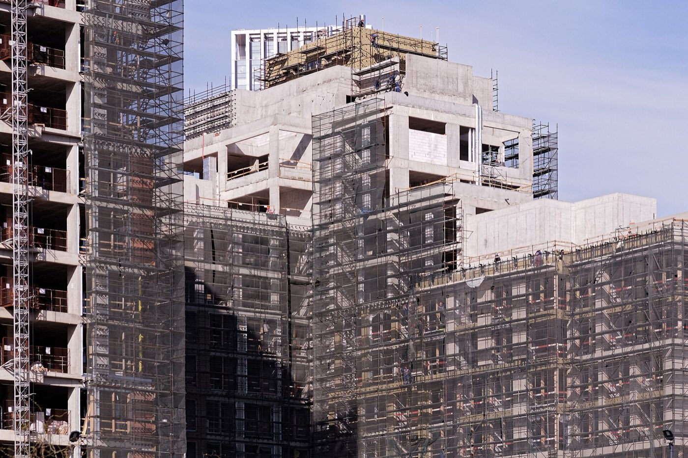
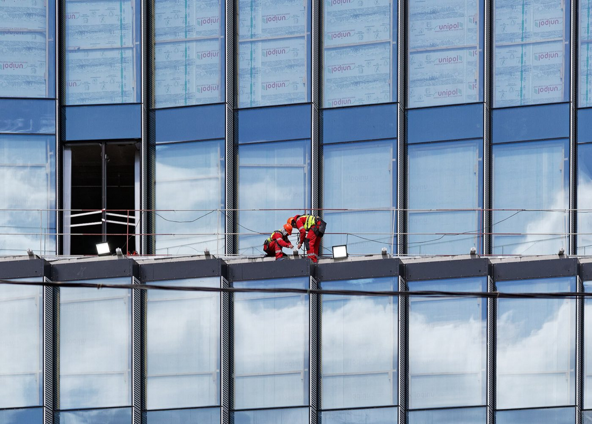
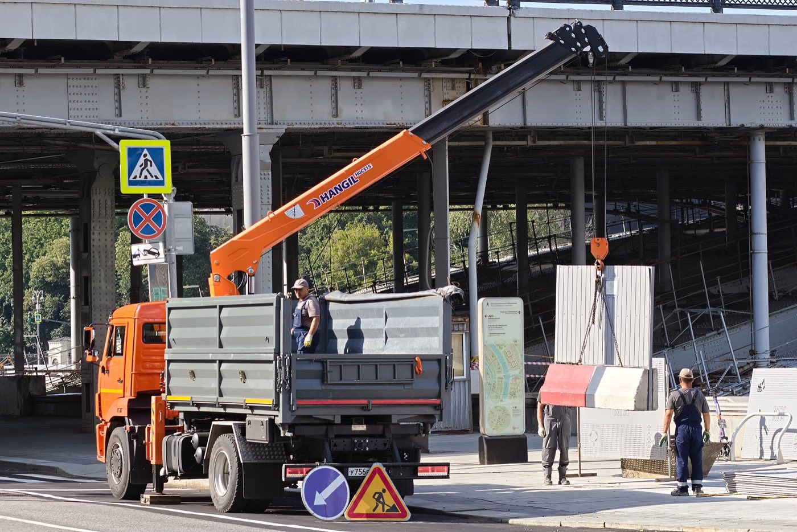
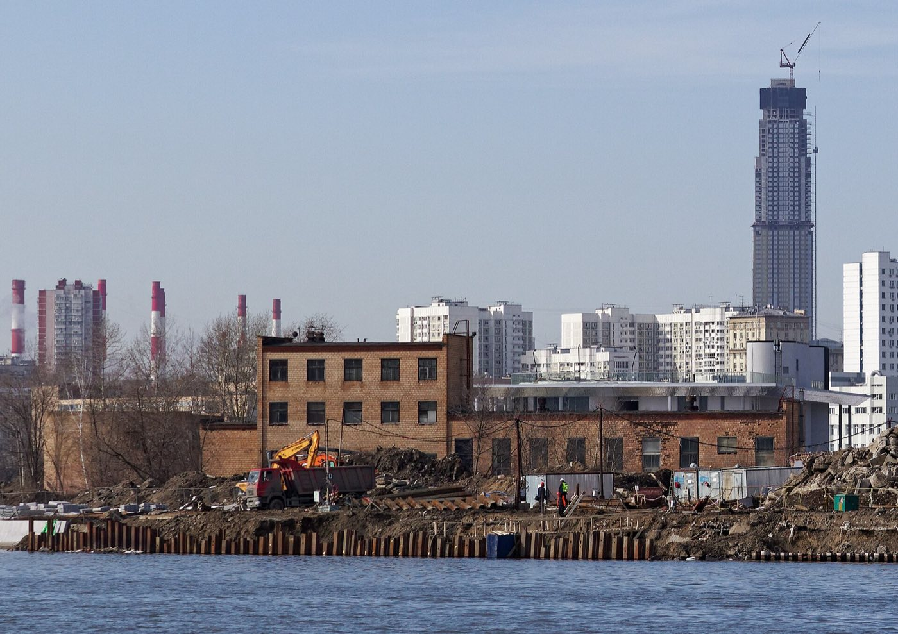

Направления
Семь направлений, которые ведём сами. Выберите нужное на ленте: покажем состав работ, результат и обычный срок. Кнопка «Добавить в расчёт» передаст направление в калькулятор на главной.

Фото: Викисклад, лицензия CC0. Это пример работ, не наш объект.
Каркас и генподряд
Возводим монолитный каркас жилых и общественных зданий, а если нужно, ведём всю стройку от котлована до ввода. Опалубка у нас своя, бетон берём у заводов с собственной лабораторией.
Что делаем
- Фундаментные плиты и ростверки
- Колонны, стены, перекрытия, лестницы
- Кладка наружных стен и перегородок
- Организация площадки и координация остальных подрядчиков
Что вы получаете
- Каркас по графику захваток
- Исполнительную документацию, которую ведём с первого бетонирования
- Одного ответственного за весь объект
6-8 днейна типовой этаж до 900 м²

Фото: MTA Capital Construction, Викисклад, лицензия CC BY 2.0
Внутренние работы
Доводим до готовности общие зоны жилых домов: входные группы, лифтовые холлы, коридоры, лестницы и колясочные. Отдельно делаем помещения под магазины, кафе и офисы на первых этажах.
Что делаем
- Перегородки из гипсокартона и блоков, штукатурка, стяжки
- Подвесные потолки, плитка, керамогранит, окраска
- Двери, почтовые ящики, навигация
- Вентиляция, свет и слаботочка внутри помещений
Что вы получаете
- Помещения, готовые к приёмке управляющей компанией
- Образцы отделки на согласование до начала работ
- Фотографии каждого узла до того, как его закроют
2-5 месна секцию жилого дома или этаж бизнес-центра

Фото: Викисклад, лицензия CC0. Это пример работ, не наш объект.
Оболочка здания
Закрываем здание снаружи: навесные вентилируемые фасады, штукатурные фасады по утеплителю, витражи и плоские кровли любых типов.
Что делаем
- Подсистемы и облицовка керамогранитом, фиброцементом, кассетами
- Штукатурный фасад по минеральной вате
- Плоские кровли с наплавляемой или ПВХ-мембраной
- Примыкания, парапеты, водосточные воронки
Что вы получаете
- Тепловизионную съёмку после закрытия контура
- Документы качества на каждый материал
- Закрытый контур до морозов, если стартуем весной
4-9 месдля жилого дома на 15-20 этажей

Фото: Викисклад, лицензия CC0. Это пример работ, не наш объект.
Сети под землёй
Прокладываем наружные инженерные сети от точки подключения до здания и сдаём их организациям, которые будут их обслуживать.
Что делаем
- Водопровод и хозяйственная канализация
- Ливневая канализация и локальные очистные
- Тепловые сети в каналах и бесканальные
- Кабельные линии и уличное освещение
- Прокол и горизонтальное бурение под дорогами
Что вы получаете
- Сети, принятые эксплуатирующими организациями
- Исполнительную геодезическую съёмку
- Акты промывки, дезинфекции и испытаний
2-4 месна квартал из трёх-четырёх домов

Фото: Викисклад, лицензия CC0. Это пример работ, не наш объект.
Двор и территория
Делаем двор таким, каким его нарисовал архитектор: проезды, тротуары, площадки для игр и спорта, газоны, деревья и малые формы.
Что делаем
- Дорожная одежда, бортовой камень, плитка
- Мягкие покрытия игровых и спортивных зон
- Посадка деревьев и кустарников, газоны
- Установка игрового оборудования, скамеек и фонарей
Что вы получаете
- Двор, готовый к заселению первых жильцов
- Паспорта на игровое оборудование и дендроплан
- Уход за посадками в первый сезон
3-5 месна двор площадью 1-2 га

Фото: Викисклад, лицензия CC0. Это пример работ, не наш объект.
Снабжение материалами
Закупаем и привозим материалы, даже если работы на объекте ведёт другой подрядчик. Берём у заводов и крупных дилеров, привозим под график захваток.
Что делаем
- Бетон, арматура, кладочные материалы
- Утеплитель, мембраны, фасадные системы
- Отделочные материалы и сухие смеси
- Хранение на нашем складе в Мытищах
Что вы получаете
- Материал к нужной дате и на нужную захватку
- Сертификаты и паспорта на каждую партию
- Цену, закреплённую в спецификации на период поставки
1-3 дняот заявки прораба до машины на площадке

Фото: Викисклад, лицензия CC0. Это пример работ, не наш объект.
Проект и подготовка
Готовим стройку до первого кубометра бетона: рабочая документация, проекты производства работ, сметы и временная инфраструктура площадки.
Что делаем
- Рабочая документация по конструктивным разделам
- Проекты производства работ и технологические карты
- Сметы и ведомости объёмов
- Ограждение, бытовой городок, временные дороги и сети
Что вы получаете
- Документацию, по которой можно сразу строить
- Сметы, сверенные с проектом
- Площадку, готовую к выходу бригад
1-3 месна подготовку среднего жилого дома